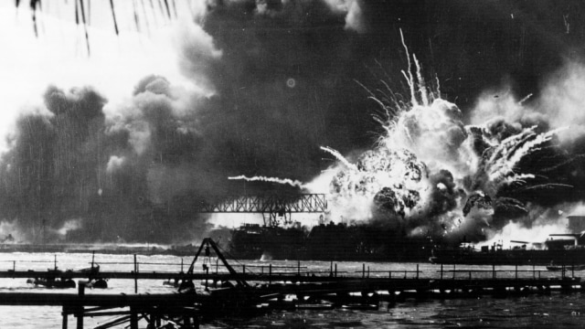
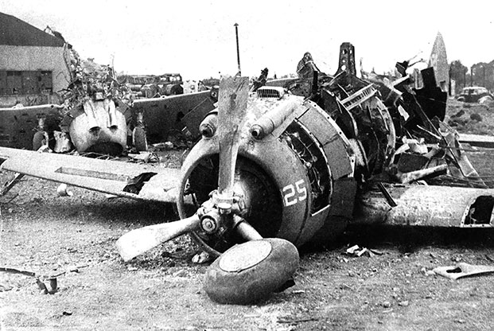

Kronologi Masuknya Jepang ke Indonesia
Latar Belakang Jepang Masuk ke Perang Dunia II
- Krisis Sumber Daya – Jepang kekurangan minyak, besi, dan karet untuk mendukung industrialisasi dan militernya. Embargo Barat semakin memperburuk situasi.
- Militerisme dan Nasionalisme – Pemerintah Jepang dikuasai oleh kelompok militeris yang mendorong ekspansi untuk menjadikan Jepang sebagai pemimpin Asia.
- Fasisme dan Blok Poros – Jepang mengadopsi ideologi fasisme dan bergabung dengan Jerman serta Italia dalam Pakta Tripartit (1940) untuk memperluas wilayah kekuasaan.
Proses Masuknya Jepang di Indonesia
Perang Dunia II di medan Asia-Pasifik diawali oleh Jepang dengan membom secara tiba-tiba pangkalan terbesar Angkatan Laut Amerika Serikat di Pearl Harbour pada 7 Desember 1941. Lima jam setelah penyerangan itu, Gubernur Jenderal Hindia Belanda, Tjarda Van Starkenborg Stachouwer, menyatakan perang terhadap Jepang.
Jepang kemudian menyerang berbagai wilayah:
- 8 Desember 1941 – Menyerbu lapangan terbang Clark Field dan Iba di Pulau Luzon, Filipina.
- 10 Desember 1941 – Menguasai Pulau Luzon dan Bataan di Filipina.
- 16 Desember 1941 – Menduduki Birma (Myanmar).
- 20 Desember 1941 – Menguasai Davao di Filipina.
1 / 3

Pearl Harbour
2 / 3

Pearl Harbour
3 / 3

Clark Air Base